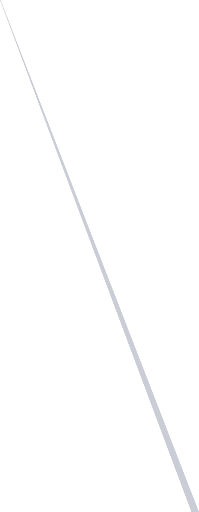
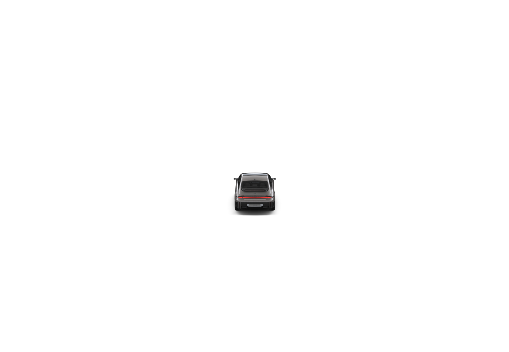

Design v2
차곡 · 운전 노고 정산 · Connect-S 17″ 2560 × 1440 · 흑백 와이어프레임 v2.2 · 홈 Nogo(가칭) · 노고 정산 PRD v1.3
캔버스
프로토타입
디자인 시스템
함께 보기
앱 1개 1700
앱 2개 840
주간
야간
주석
누를 곳 표시
여백 선
화면 틀 가이드 ↗
← 뒤로
처음부터
1:1 보기
차 신호(Virtual Console 대신)
착석 4명 감지
주행 시작
도착 · 방식 A
도착 · 방식 B
앱 시작
네트워크 없음(켜기/끄기)
좌석 센서 오류
미리보기 실패
도착 · 날씨·정체 못 받음
시연 모드(켜기/끄기)
도착 · 눈 오는 날
도착 · 맑은 낮 1시간 · 2명
도착 · 10분 · 2명(B 제안 없음)
도착 · 혼자


11:29
1660 × 1144
800 × 1144
800 × 1144